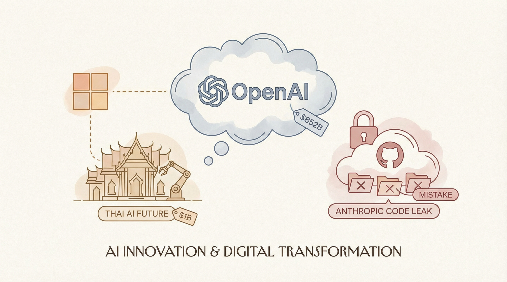

OpenAI融资后估值达8520亿美元
两克伴AIGC日报
2026-04-02 星期四

本期关注：OpenAI融资后估值达8520亿美元，微软10亿美元投资泰国AI；Anthropic意外撤回GitHub泄露源代码，Meta拟用天然气发电供Hyperion数据中心；Claude Code纯Python重写开源支持本地模型，Qwen3.5-9b微调提升智能体表现。
📰 行业动态
微软承诺投资10亿美元支持泰国AI发展
Anthropic撤回大量GitHub仓库下架通知，称是意外操作
Meta计划在Hyperion AI数据中心使用10个新天然气发电厂
🔥 今日焦点
近日，Reddit用户u/yehyakar发布了一项关于AI模型Qwen3.5-9b的最新研究成果。该研究基于Copaw-9B（Qwen官方的智能体套件）和Opus 4.6推理，对Qwen3.5-9b进行了微调和GGUF量化，旨在提高其在智能体应用中的表现。
这项研究的重要之处在于，它为AI领域带来了新的突破。首先，通过微调和量化，Qwen3.5-9b在智能体应用中的表现得到了显著提升，为AI在智能体领域的应用提供了有力支持。其次，该研究借鉴了Copaw-9B和Opus 4.6推理的优点，进一步丰富了AI模型的应用场景。
标题：Show HN：CAUM – 80K AI agent sessions分析，88.7%循环失败，AUC=0.814
核心内容概述：Caum系统近日发布了一份关于其AI代理的实验报告，分析了80,000个AI代理会话。报告显示，在这些会话中，高达88.7%的循环失败，平均AUC（曲线下面积）为0.814。
📚 深度长文
2026年3月，LangChain Newsletter带来了一系列令人振奋的消息。文章核心观点聚焦于LangChain社区的最新进展，包括NVIDIA的深度集成、Interrupt 2026的票务销售以及LangSmith Fleet（前身为Agent Builder）的发布。
文章详细介绍了NVIDIA与LangChain的深度合作，这一整合将为AI开发者提供更强大的工具和资源，助力他们在LangChain生态系统中实现更高的创新。同时，Interrupt 2026的票务销售也标志着AI领域重要盛事的临近，吸引了众多业内人士的关注。
《Listen: OpenClaw: A power-user's guide to the most powerful personal AI tool since ChatGPT》一文，由Lenny Rachitsky撰写，深入探讨了OpenClaw这一个人AI工具的强大功能及其在AI领域的重要地位。文章核心观点在于，OpenClaw不仅是继ChatGPT之后又一革命性的个人AI工具，更是为高级用户量身定制的利器。
文章详细介绍了OpenClaw的多种高级功能，包括智能数据分析、自动化任务处理、以及个性化内容生成等。通过关键论据，如案例研究和技术分析，作者展示了OpenClaw如何帮助用户提高工作效率、拓展知识边界，甚至实现创新。
本文深入探讨了人工智能领域的最新动态，聚焦于临时工在家训练人形机器人以及更先进的AI基准测试。文章以尼日利亚一名医学生Zeus为例，揭示了临时工在人工智能领域的积极作用。Zeus利用业余时间在家训练人形机器人，这一现象不仅展示了人工智能技术的普及，也体现了临时工在人工智能发展中的重要作用。此外，文章还介绍了更先进的AI基准测试，为人工智能研究提供了新的参考标准。本文深度剖析了人工智能领域的最新进展，为AI从业者提供了宝贵的参考资料，具有极高的阅读价值。
🛠️ 产品推荐
Show HN: Continuously Improve Claude Code Plans是一款专注于持续优化Claude代码计划的AI工具。该产品通过分析代码，提供智能化的改进建议，帮助开发者提升代码质量和效率。其核心功能包括代码分析、智能优化和性能提升。通过利用先进的AI技术，Claude Code Plans能够快速识别代码中的潜在问题，并提出针对性的解决方案，有效解决开发者面临的代码优化难题。对于技术从业者而言，这款产品能够显著提高工作效率，降低开发成本，助力项目顺利推进。
---
Mkdnsite是一款开源的Markdown原生Web服务器，专为人类和智能代理设计。它无需构建步骤，即可将Markdown文件转换为功能网站。支持Bun/Node/Deno运行，可作为独立可执行文件或Docker容器使用。Mkdnsite通过内容协商，为浏览器提供HTML，为智能代理提供Markdown，极大简化了Markdown文件到网站的转换过程，是新时代最便捷的Markdown网站构建工具。
---
Show HN: 4D business analysis with parallel AI agents（AofA-inspired）是一款创新的4D商业分析工具。该产品通过同时运行四个AI代理，利用代理输出之间的矛盾作为信号，提供深入的业务洞察。这款工具旨在解决复杂商业问题，通过并行AI代理的协同工作，帮助用户快速识别关键信息，提高决策效率。其独特的AI能力和创新性，为技术从业者提供了一种全新的分析视角。